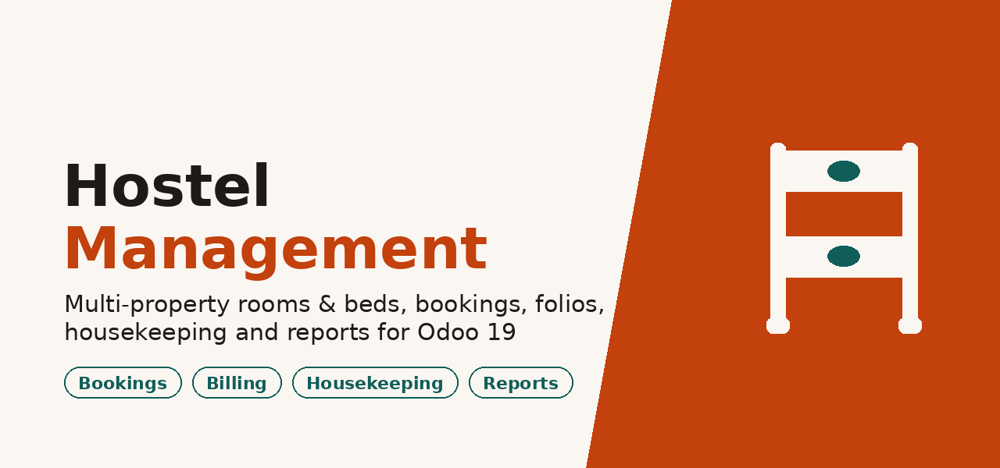
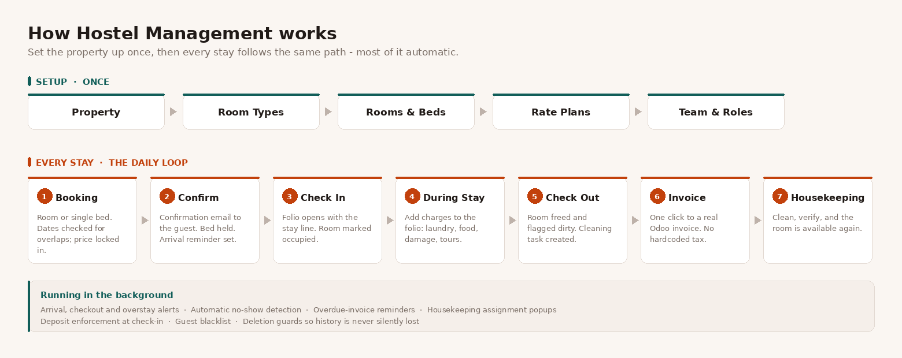
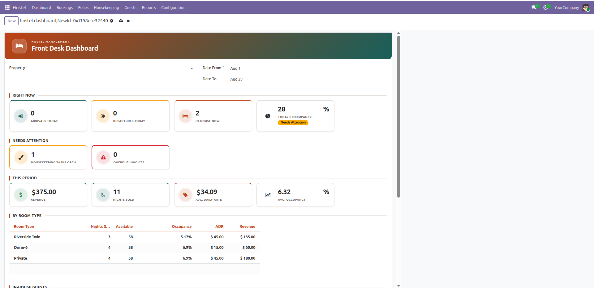
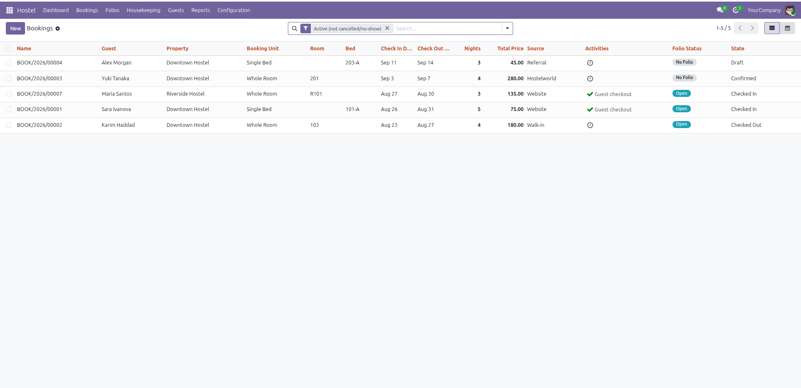
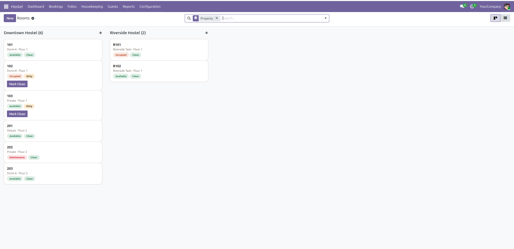
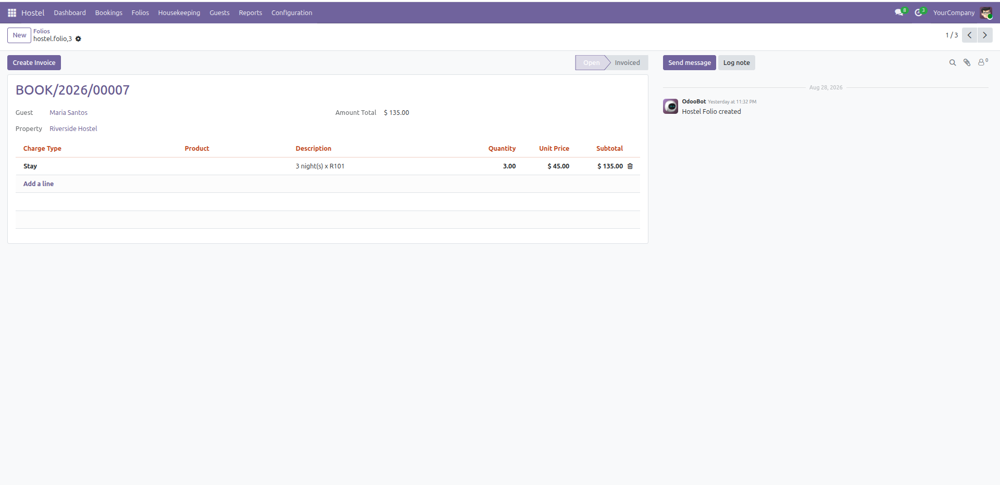

Multi-property rooms and dorm beds, overlap-safe bookings, itemized folios that invoice through standard Odoo Invoicing, housekeeping tasks, QWeb reports, and a set of live front-desk notifications that catch the things a busy front desk would otherwise miss - a deleted folio, a guest who never checked in, a guest who never checked out. No Enterprise modules, no Studio, no third-party dependency: installs and runs identically on Community.





state) and housekeeping
(housekeeping_status) axes, so a room can be occupied and still dirty at
the same time - the two are never conflated into one fieldres.partner (with an ID-document scan,
date of birth, and computed stay history) instead of a parallel contact model, so
they show up everywhere Odoo already expects a partnerBook a whole room or a single bed in a shared dorm. A whole-room booking blocks every bed inside that room and vice versa - checked both directions by the same overlap constraint, not two separately-maintained checks that can drift apart.
Pricing is locked at booking time: changing a room type's rate later never moves the price of a booking made under the old rate.
Full stay lifecycle: draft → confirmed → checked_in → checked_out,
with cancel and no-show side branches. Check-in correctly cascades room/bed occupancy status,
including partial-occupancy dorms (a room only reads "occupied" once every bed in it is).
Deposits, OTA source/reference tracking, and additional-guest lists round out the booking form for real-world front-desk use.
Folios open automatically at check-in with a pre-filled stay line, priced off the
booking's already-locked rate. Add charges any time - laundry, food, damage, tours, whatever
the property needs - then invoice with one click through standard Odoo Invoicing. No
custom tax or currency handling: it's a real account.move, so everything downstream
(payments, accounting, reporting) just works.
Housekeeping tasks are created automatically on checkout and tracked through pending → in progress → done → verified, with a one-click "Mark Clean" shortcut for the front desk that completes the matching task behind the scenes rather than being a second, disconnected system.
QWeb PDF reports: booking confirmation, check-in registration card, folio, daily arrivals & departures, and an occupancy/ADR summary - plus revenue and occupancy pivot and graph views, and a status-colored Room Kanban board with front-desk saved filters (arrivals today, departures today, in-house now).
Property-scoped security: Staff and Housekeeping roles only see the properties assigned to them (unrestricted if none are assigned, rather than locked out); Managers see everything. Guest ID-document fields are field-level restricted to Staff/Manager only. A separate Housekeeping role sees rooms, beds and tasks - nothing else.
Every mechanism described above is covered by an automated test that exercises the real behavior - not just written and assumed correct. No Gantt view, no Studio dependency, no Documents app dependency, no POS or portal integration: deliberately scoped to what a standalone hostel front desk actually needs.